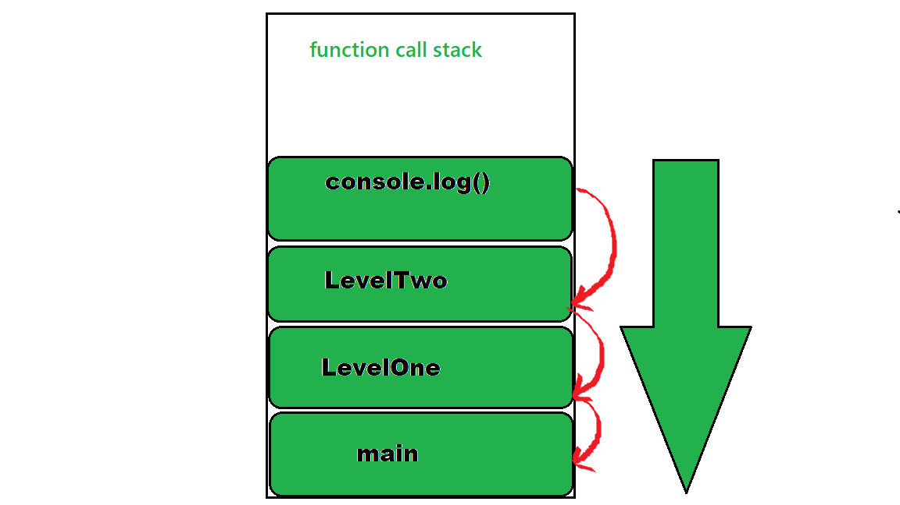
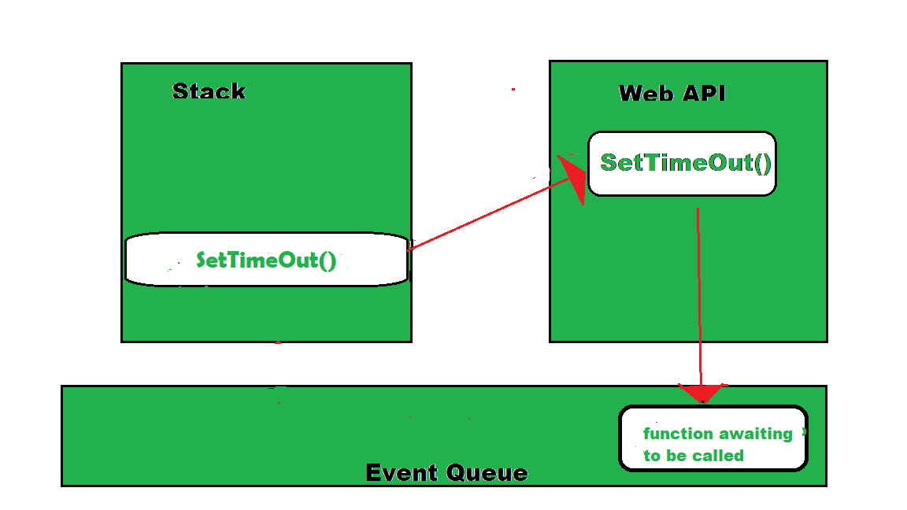

Async (Attribute)
Async is a boolean attribute and its job is:
when true the scripts is downloaded alongside the page and is executed as soon as possible
Look at this example
let age = 375
console.log("Age:", age)
alert("age is "+ age);
document.getElementById("age").innerHTML = age;
the code is executed as soon as possible, before the page has fully loaded,thus the alert is displayed before tha page has finished loading
Callback
A Callback is a function that is a function that is executed when it is CALLED instead when it is defined
example:
function twoplustwo() { let result= 2+2; } ... twoplustwo()
the function two plust two is defined but no called until it is called later
Promise
Promises find their placein asynchronous operations, since they allow you to determine what code to run if an action is either resolved or failed after defining the promise and after the asynchronous task is completed
let myPromise = new Promise(function(myResolve, myReject) {
...
myResolve(); // when successful
myReject(); // when error
});
...
myPromise.then(
function(value) { /* code if successful */ },
function(error) { /* code if some error */ }
);
Async/Await
The keyword async before a function makes the function return a promise, inside of wich, the await keyword stops a function until a promise resolves
Example:
async function myDisplay() {
let myPromise = new Promise(function(resolve) {
setTimeout(function() {resolve("I love You !!");}, 3000);
});
document.getElementById("demo").innerHTML = await myPromise;
}
myDisplay();
Event loops
an event loop is the secret by which JavaScript gives us an illusion of being multithreaded even though it is single-threaded.
Javascript maintains a stack of the order of the actions it must take
Example of a function an its stack
function LevelTwo() {
console.log("Inside Level Two!")
}
function LevelOne() {
LevelTwo()
}
function main() {
LevelOne()
}
main()

and this is how the event loop works
.png)
.png)